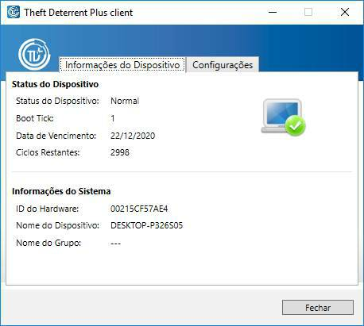
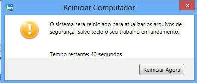
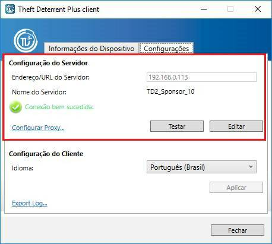
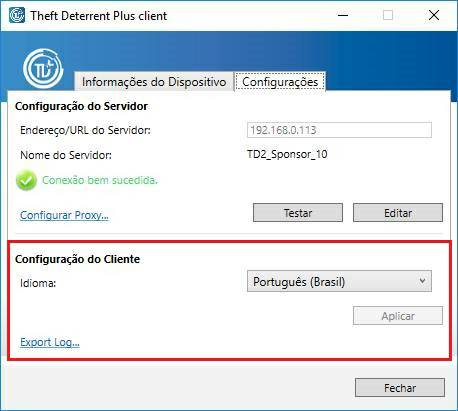
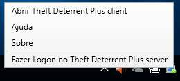

Para ver ou verificar o status e as configurações do cliente, clique no ícone do aplicativo Theft Deterrent Plus client na área de trabalho para abrir o cliente.

Na página Informações do Dispositivo, verifique o ícone de status na tabela de status do cliente. Se vir uma mensagem de erro, consulte a tabela de mensagens de erro.
As seguintes informações são exibidas na página Informações do Dispositivo:
Status do Dispositivo |
|
Status do Dispositivo |
O status do cliente. |
Boot Tick |
Um número hexadecimal que recebe um incremento de 1 depois que o cliente aplica um pacote do servidor com êxito. |
Data de Vencimento |
A data a partir da qual o dispositivo será bloqueado. |
Ciclos Restantes |
O número de vezes que você pode reiniciar o dispositivo ou restaurá-lo de suspensão ou hibernação até ser bloqueado. |
Informações do Sistema |
|
ID do Hardware |
Uma cadeia de 12 caracteres exclusiva para cada dispositivo. |
Nome do Dispositivo |
O nome de computador do dispositivo. |
Nome do Grupo |
O nome da escola ou região à qual este dispositivo pertence no servidor. |
Em geral, o cliente é
pré-ativado de fábrica por padrão. Você poderá ignorar esta seção se
o seu cliente já estiver ativado.
Para garantir que o cliente esteja ativado, você pode verificar o ícone do cliente, certificando-se de que o cliente não esteja no status Inativo .
Se o cliente não foi ativado, execute estes procedimentos para ativá-lo com o servidor:
1. Verifique se o cliente está conectado ao servidor. Uma solicitação de ativação será enviada ao servidor automaticamente.
2. Após o servidor aprovar sua solicitação de ativação, uma caixa de diálogo de reinicialização será exibida no seu dispositivo. A caixa de diálogo contém um cronômetro de contagem regressiva que começa a partir de 60 segundos, e o sistema será reiniciado automaticamente após esse tempo.

Durante o processo de ativação, o servidor define a Data de Vencimento e os Ciclos Restantes para o cliente habilitar o mecanismo do Theft Deterrent Plus. Depois que o cliente estiver ativado, poderá operar automaticamente sem interação do usuário. Isso pode ser verificado pelo ícone de status .
Em geral, as configurações de conexão do cliente são predefinidas de fábrica por padrão. Você poderá ignorar esta seção se as configurações estiverem predefinidas.
Caso contrário, você poderá definir as configurações de conexão manualmente para garantir que o cliente esteja se comunicando com o servidor. Execute estes procedimentos:
1. Selecione a guia Configurações e clique no botão Editar.
2. Se vir uma janela pop-up, insira a senha do cliente e clique em OK. Contate o pessoal de suporte designado se não tiver a senha.
3. Insira o endereço IP ou a URL do servidor no campo Endereço/URL do Servidor e clique em Salvar.
4. Se precisar configurar o proxy para acessar o servidor, clique no link Configurar Proxy e selecione uma opção de configuração de sua escolha:
a. Se o endereço do servidor proxy foi configurado no sistema operacional, selecione Usar configurações do proxy do sistema. Caso contrário, selecione Configuração manual de proxy e insira o endereço do servidor e o número da porta.
b. Insira o nome de usuário e a senha do servidor proxy se a autenticação de proxy for necessária e clique em OK.
5. Clique no botão Testar para testar a conexão.
a. Se vir a mensagem "Conexão bem-sucedida", o cliente se conectará ao servidor após um instante. Nenhuma outra ação é necessária.
b. Se vir a mensagem "Falha na conexão" ou "A conexão falhou devido a um proxy inválido", verifique o endereço do servidor e as configurações de proxy, e certifique-se de que você esteja conectado à rede correta. Em seguida, teste a conexão novamente.

Você pode configurar o cliente para exibir um dos seguintes idiomas:
· English (United States)
· Español (Latinoamérica)
· Português (Brasil)
· Türkçe
Para alterar o idioma de exibição do cliente no classmate PC, selecione o idioma de sua preferência e clique em Aplicar na página Configurações.

Você pode configurar sua conta do aluno no servidor. Caso seu dispositivo seja bloqueado, você mesmo poderá gerar o código de desbloqueio.
Para configurar sua conta do aluno, execute estes procedimentos:
1. Clique com o botão direito do mouse no ícone da bandeja do cliente e clique em Fazer Logon no Theft Deterrent Plus server no menu da bandeja.

2. Na página da Web do servidor para alunos, configure sua conta inserindo seu nome, senha e email.
Observação: A senha deve ter de 6 a 12 caracteres.
Caso seu dispositivo seja bloqueado, você poderá pegar outro dispositivo emprestado para gerar o código de desbloqueio. Execute estes procedimentos:
1. Abra a página da Web do servidor para alunos.
2. Faça logon com a ID do Hardware exibida na tela de bloqueio e a senha da sua conta.
3. Na página inicial, clique em Gerar Código de Desbloqueio.
4. Insira o Boot Tick exibido na tela de bloqueio e clique em Gerar para gerar o código de desbloqueio.
Observação: Por padrão, você só pode gerar códigos de desbloqueio três vezes em 30 dias. O administrador do servidor pode configurar esse valor padrão de acordo com as necessidades.
Status do Dispositivo |
Ícone da bandeja |
Descrição |
Ação |
Normal |
O cliente está funcionando corretamente. |
Nenhuma ação é necessária. |
|
Permanente |
O cliente está funcionando corretamente. Sua Data de Vencimento e Ciclos Restantes estão definidos com um valor que nunca expirará. |
Nenhuma ação é necessária. |
|
Prestes a Expirar |
O dispositivo será bloqueado dentro de alguns dias ou após algumas reinicializações, suspensões ou hibernações. |
Verifique se o cliente está conectado ao servidor para que a Data de Vencimento e os Ciclos Restantes sejam renovados automaticamente. |
|
Baixando pacote de atualização |
O cliente está baixando um pacote de atualização. |
Verifique se o cliente está conectado ao servidor e não reinicie o sistema. |
|
Atualizando o Theft Deterrent Plus client |
A atualização do cliente está em andamento. |
Nenhuma ação é necessária. |
|
Erro |
|
O cliente tem um erro. |
|
Inativo |
O cliente não foi ativado e, portanto, não está protegido pelo mecanismo do Theft Deterrent Plus. |
Conecte o cliente ao servidor e depois entre em contato com o administrador do servidor para ativar o cliente. |
Se uma mensagem de erro for exibida no cliente, siga estas soluções:
Mensagem |
Solução |
|
Não é possível se conectar ao servidor |
||
Aguardando aprovação do servidor... |
Aguarde o servidor aprovar o cliente e reinicie o dispositivo quando você vir a caixa de diálogo pop-up solicitando a reinicialização do sistema. |
|
Rejeitado pelo servidor |
Verifique se o cliente está conectado ao servidor correto. |
|
Conectado com o servidor errado |
Verifique se o cliente está conectado ao servidor correto. |
|
O servidor está ocupado. Aguarde... |
Aguarde um instante e verifique o status novamente. |
|
O servidor está em manutenção |
Aguarde um instante e verifique o status novamente. |
|
Boot Tick inconsistente |
Contate o pessoal de suporte designado para redefinir o valor do Boot Tick. |
|
Limite de download de certificado excedido. |
Contate o pessoal de suporte designado para redefinir o limite de download. |
|
Falha no download/atualização |
Verifique se a conexão de rede entre o servidor e o cliente foi estabelecida com êxito. Aguarde um instante e verifique o status novamente. |
|
Erro do dispositivo |
Verifique os códigos de erro do dispositivo. |
Se você vir um código de erro no cliente ou na tela de bloqueio do Education Tablet, verifique os códigos de erro na seguinte tabela:
Código de erro |
Descrição |
|
0X02010001 |
0X01010001 |
Não é possível encontrar o dispositivo TPM. |
0X02010002 |
0X01010002 |
O TPM está desabilitado. |
0x02011006 |
/ |
|
0X02010003 |
0X01010003 |
O TPM está desativado.
|
0x02011007 |
/ |
|
0X02010004 |
0X01010004 |
Ocorreu um erro durante a inicialização do TPM na linha de fabricação. Os possíveis motivos incluem os seguintes: 1. O TPM não tem uma Chave de Endosso pré-instalada. 2. Falha na criação da partição ou índice NV do TPM. 3. O status do TPM está incorreto. |
0X02010005 |
0X01010005 |
|
0X0201000A |
0X0101000A |
|
0X0201000C |
0X0101000C |
|
0X0201000E |
0X0101000E |
|
0X0201000F |
0X0101000F |
|
0X0201FFFF |
0X0101FFFF |
Erro interno ao acessar o TPM. |